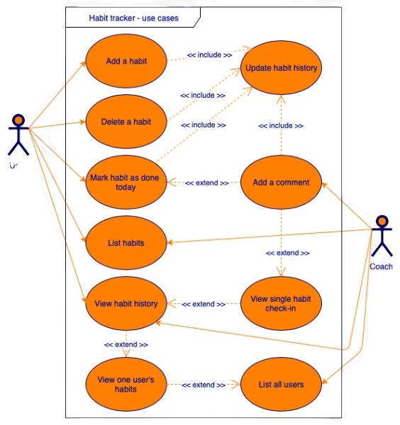
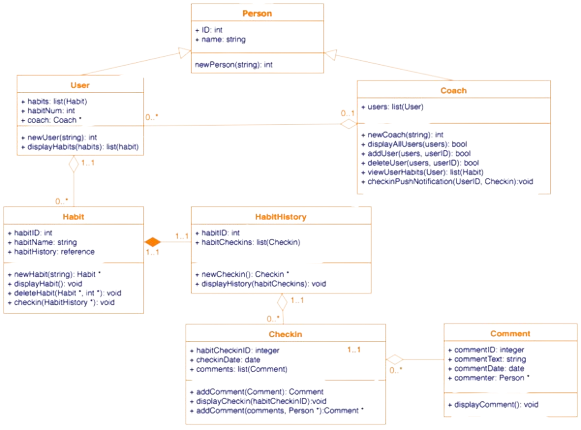

Ühendatud modelleerimiskeel (UML) on diagramm märkmete keele süsteem, mis võimaldab visualiseerida süsteeme ja tarkvara. See on üks populaarsemaid diagrammide tegemise vorme tarkvaraarenduses ning sai ISO standardiks 1997. aastal. Sellest ajast alates on olnud uuendusi, võimalus lisada ekstra tüüpi UML diagramme ja toetada uusi tehnoloogiaid programmeerimises.
Diagrammid on tekstist lihtsamad ja kiiremini mõistetavad, seega on need süsteemide dokumenteerimiseks sobivamad kui kommentaarid. Need aitavad teid ja teie ettevõtet mitmes olukorras, näiteks kui te:
Muidugi, kui soovite midagi uut arendada, leiate oma UML diagrammidest palju probleeme juba enne nende arendamist või kvaliteedikontrolli, mis võivad muutuda arenduse või kvaliteedikontrolli käigus takistusteks.
On kaks peamist kategooriat ja 14 erinevat tüüpi UML diagrammi, mida kasutatakse erinevates olukordades:
On mõned UML diagrammid, mida kasutatakse enamikes tarkvaraarenduse või süsteemide modelleerimise olukordades, sealhulgas IT-infrastruktuuri ja ärirakenduste puhul. Kolm peamist UML diagrammi, millega peaksite mugavaks saama, hõlmavad kasutusjuhtude diagramme, klassidiagramme ja jadadiagramme.
Kasutusjuhtude diagrammid luuakse süsteemi või programmi nõuete analüüsimisel. Need kujutavad endast funktsioone või omadusi, osalejaid ja nende omavahelisi suhteid.
Objektorienteeritud programmeerimiskeeled põhinevad klassidel ja nende vahelistel suhetel. UML klassidiagrammi märkmete arendati nende programme visuaalselt esindama. Klassid sisaldavad oma atribuute (nende andmed) ja käitumist (liikme funktsioonid) ning on omavahel seotud mitmesuguste ühendajatega.
UML-kujude raamatukogud võimaldavad teil diagramme oma süsteemide ja tarkvara kiiresti ja lihtsalt luua, kasutades UML-i märkmeid. Veenduge, et enne joonistamise alustamist oleks see raamatukogu lubatud: klõpsake vasakul paanil nuppu Rohkem kujundeid ..., seejärel lubage UML-kujude raamatukogu ja klõpsake rakenda.